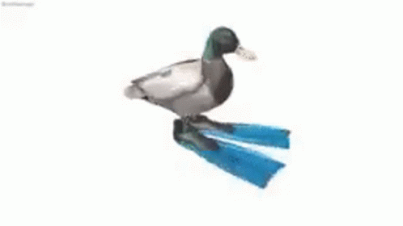

📚 3er año de preparatoria
| Hora | Lunes | Martes | Miércoles | Jueves | Viernes |
|---|---|---|---|---|---|
| 7:00 - 7:50 | Diseño Digital | Derecho II | Filosofía | Filosofía | Derecho II |
| 7:50 - 8:40 | Diseño Digital | Act. Artísticas y Culturales IV | Filosofía | Filosofía | Derecho II |
| 8:40 - 9:30 | Historia Universal Contemporánea | Matemáticas VI | Páginas Web | Matemáticas VI | Diseño Digital |
| 9:30 - 10:20 | Matemáticas VI | Matemáticas VI | Páginas Web | Matemáticas VI | Diseño Digital |
| 10:20 - 11:10 | R | E | CE | S | O |
| 11:10 - 11:30 | Páginas Web | Psicología II | Taller de Matemáticas Interno | Economía II | Economía II |
| 11:30 - 12:20 | Ecología y Medio Ambiente | Psicología II | Inglés VI | Economía II | Taller de Computación Interno |
| 12:20 - 13:10 | Ecología y Medio Ambiente | Historia Universal Contemporánea | Inglés VI | Salud Integral del Adolescente VI | Psicología II |
| 13:10 - 13:55 | Inglés VI | Historia Universal Contemporánea | Ecología y Medio Ambiente | Salud Integral del Adolescente VI | Orientación |